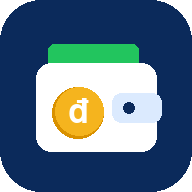

Đang mở quản lý thu chi…
Có thể do mạng chậm hoặc Google đang lỗi. Bấm "Thử lại", hoặc mở trực tiếp ứng dụng.
Mở trực tiếp vẫn dùng được bình thường, chỉ là có thanh thông báo của Google ở trên cùng.
Mở file index.html trên GitHub, sửa dòng APP_URL thành đường link
…/exec của Web App thu chi rồi bấm Commit.